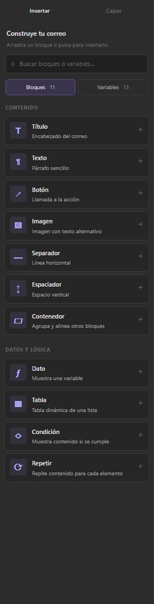
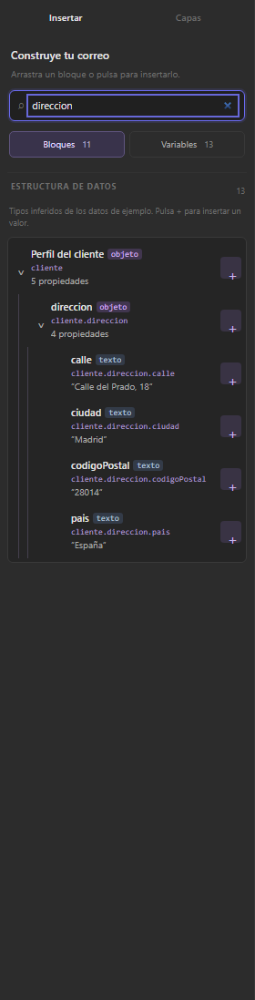
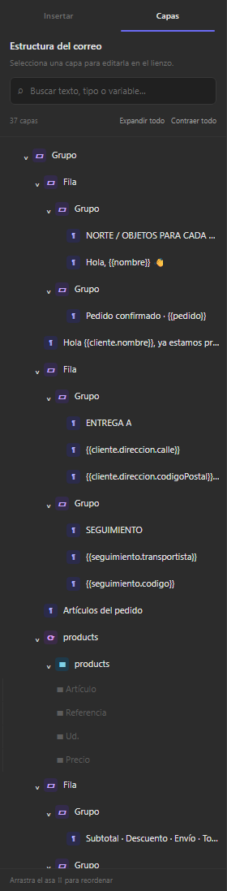
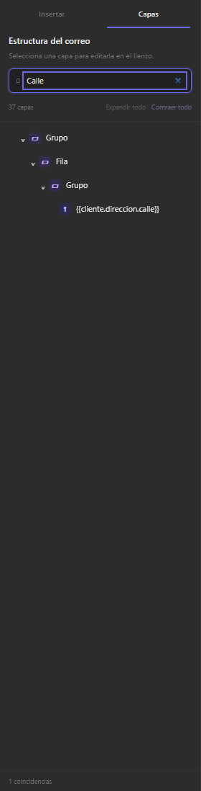
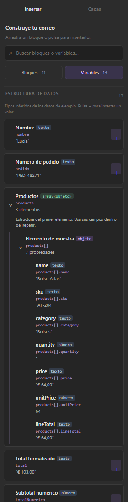
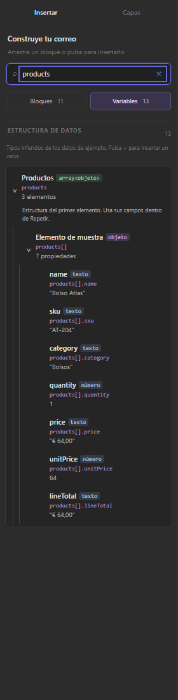

Insertar y Capas
Capturas del prototipo renovado. Búsqueda por nombre, tipo y expresión; navegación por grupos y acceso completo a las variables.
Biblioteca de bloques
Búsqueda de variables
Estructura del correo
Búsqueda con contexto
Variables con tipos y estructura
Array y campos de sus elementos
Verificado en Chromium: búsqueda de variables anidadas, contraer todo, búsqueda de descendientes contraídos y estado sin coincidencias.
Comparación visual del correo